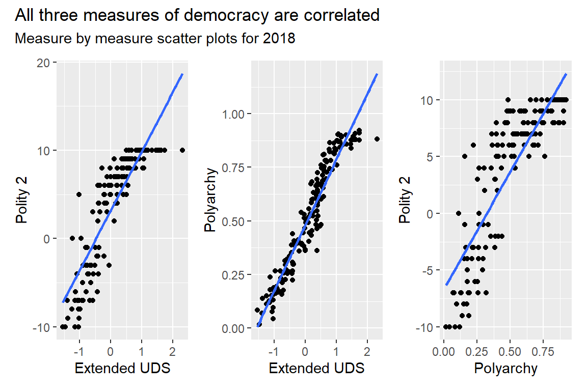
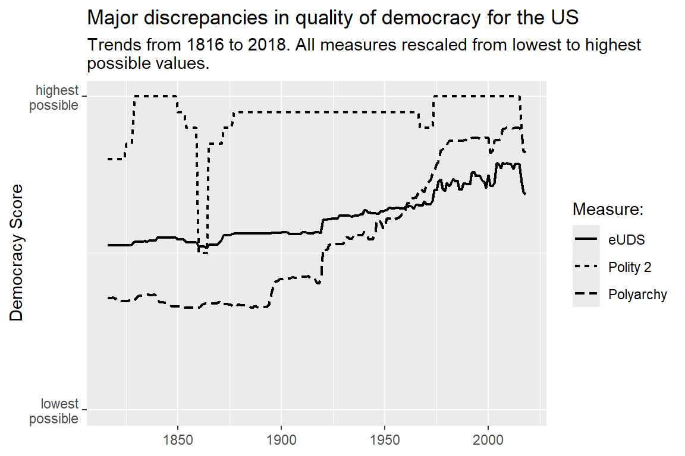
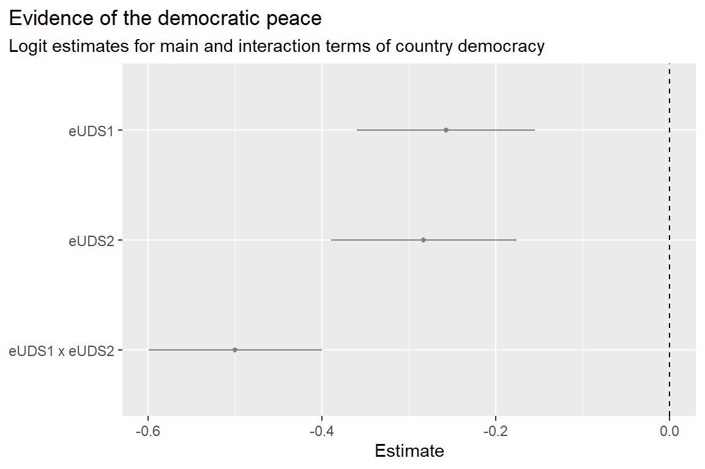
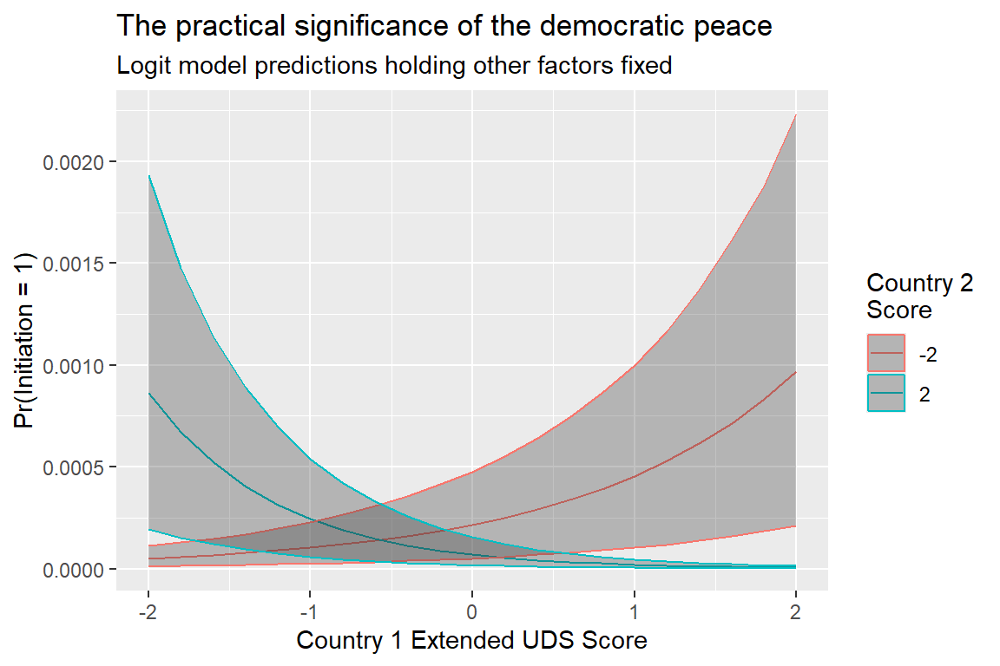

7 The Democratic Peace
Main ideas:
Democratic Peace: Democracies rarely fight each other, though they fight non-democracies at normal rates. This empirical pattern is one of the most widely accepted findings in conflict research.
Debate Over Causes: Scholars disagree about why the democratic peace exists. Some argue democracy itself promotes peace through accountability, audience costs, or shared norms, while others argue peace is driven by correlated factors like economic interdependence (the “capitalist peace”).
- Measuring Democracy: Researchers use different datasets to measure democracy—such as the Polity 2 index, the V-Dem polyarchy index, and the extended Unified Democracy Scores (eUDS)—which capture different aspects of democratic governance but generally correlate with one another.
- Empirical Testing: A directed-dyad-year dataset can be used to test whether the likelihood of conflict depends on the democracy levels of both countries, but to test the complex and condition relationship implied by the democratic peace, this requires estimating an interaction model.
- Key Finding and Puzzle: Evidence supports the democratic peace (democracies avoid fighting each other), but results can also suggest a “non-democratic peace,” raising questions about measurement, model specification, and alternative explanations for peace.
7.1 What is the Democratic Peace?
I don’t recall when I first learned about the “democratic peace,” or even when I first heard the term. For most peace scientists narrowly, and political scientists generally, the democratic peace is common knowledge and one of the few regularities in the social sciences that occurs with law-like consistency. It belongs in the pantheon of laws in the natural and hard sciences, placed squarely between the law of gravity and the second law of thermodynamics.
I’m being hyperbolic, but only a little. The democratic peace is a persistent pattern that shows up in the data, and few question its empirical accuracy.
So what is the democratic peace? Dean Babst (1964) coined the term decades ago, and it describes the fact that democracies rarely fight each other, even while they fight other countries just as much as everyone else. This finding persists across a wide range of datasets and definitions of conflict and measures of democracy.
The irony with the democratic peace is that, while widely accepted as an empirical fact, little agreement exists on exactly why. An entire cottage industry of research has coalesced around trying to explain the democratic peace. It’s a subject written about so much that once a graduate school professor of mine told me not to do a project on it because it’d been beaten like a dead horse. As of March 2026, a Google Scholar search for “Democratic Peace” returns over 6,400 articles and books published since 2022. If I extend my search to articles published any time, the number of pieces found totals almost 45,000. A dead horse indeed.
So much work exists on the subject because the implications for global peace are profound. Could spreading democracy reduce the chance of war? Or is democracy correlated with something else that seems to profoundly lower the chances of conflict between countries?
Each of these questions gestures toward two main schools of thought that have developed around the democratic peace. The first argues that democracy itself is the cause. The second argues that democracy and peace are both correlated with other factors that are actually the cause of peace.
Work in the first school tends to theorize that the leaders of democratic regimes pay attention to the regime of other countries when making a determination about whether to go to war. This idea helps answer why the democratic peace is localized specifically to democratic dyads. Other accounts emphasize the idea that democracies are less apt to go to war because citizens would bear most of the costs of fighting. Elected leaders have to pay attention to the interests of their constituents, and this moderates their aggression toward other countries. However, this argument fails to account for the fact that democracies fight non-democracies at normal rates. Clearly, if democracy is the cause of peace, part of the mechanism must be that democracies pay attention to the regimes of potential targets.
Even among those who accept that leaders base decisions on the regimes of other countries, further disagreement exists on exactly why. Some argue that leaders of democracies have to be more reliant on popular support for their policies, which makes them more formidable adversaries in a conflict when they actually go to war. Others argue that leaders in democracies face audience costs if they back down from a threat or conflict, which increases their resolve. The idea is that citizens will punish their leaders at the ballot box for appearing weak on the global stage. Since democracies know this about each other, they are less apt to provoke fellow democracies who will face strong domestic pressure to respond to international threats.
Others argue that democracies behave differently toward each other because of shared norms. Negotiation and compromise (theoretically) are central to the democratic process domestically. Therefore, the argument goes, democracies extend these same domestic norms to their interactions with other democracies. Conversely, democracies don’t apply these norms to countries they view as non-democratic.
Unfortunately, while these arguments make a lot of sense, definitive evidence that any of these mechanisms is at work remains elusive. This creates space for alternative arguments which posit that democracy and peace are simply correlated with other confounding factors. One prominent alternative explanation, which I’ll introduce in greater detail in the next chapter, centers on trade. Many democracies also tend to be important trading partners, and this could explain why democracies rarely fight each other. This school of thought is more closely aligned with the “capitalist peace,” which argues financial and economic interdependence reduces the chance of war. This idea isn’t inherently in conflict with the democratic peace (both could be true at the same time), but some invoke the capitalist peace as competing explanation rather than a complementary one.
Nonetheless, plenty of researchers remain committed to the idea that democracy itself promotes peace (at least among democratic countries), and in the applied example below I’ll introduce you to a particular approach to analyzing the data that reveals the conditional nature of the democratic peace: namely, that democracies appear to behave differently toward fellow democracies compared to everyone else.
But first, I think it’s important to spend some time thinking about democracy as a concept and how to measure it.
7.2 Measuring Democracy
Just as the democratic peace is a hotly debated and widely written about subject, so is democracy itself. An R package called {democracyData} provides access to 39 distinct datasets that measure democracy, and on Google Scholar a search for the term “Democracy” returns almost 5 million results.
With so much literature to contend with, knowing where to start is hard to do. To keep things simple, I’ll introduce you to just three distinct measures of democracy that are directly accessible using the {peacesciencer} package. Compared to many of the alternatives, these three measures are among the most commonly used.
First, there’s the Polity 2 Index from the Polity IV Project (Marshall, Gurr, and Jaggers 2017). Only recently has Polity advanced to the Polity 5 Project, but as of now {peacesciencer} only provides access to version IV. This isn’t really a big deal, though, because little has actually changed, and version IV provides sufficient data coverage for the time-frame covered by the Militarized Interstate Events (MIE) dataset I’ve been using to measure international conflict in previous chapters (Gibler and Miller 2024).
Polity’s approach to measuring democracy emphasizes constraints on country executives (presidents or prime ministers in democracies, and “supreme leaders” of one sort or another in non-democracies). Countries receive numerical scores across a range of dimensions by expert coders for things such as how executives are selected, whether and to what extent they can act without impunity, and whether and to what extent other governing bodies can check their power. Once all the relevant scores are noted, they’re added up. The result a score from -10 to 10 which quantifies how democratic or autocratic a country is. This score is known as the the Polity 2 Index. A 10 on the scale is as democratic as a country can possibly be, while a -10 is as autocratic as one can be.
One of the chief competitors with Polity’s measure of democracy is the Variety of Democracy (V-Dem) Project’s polyarchy index (Coppedge et al. 2020). Much like Polity 2 scores, the polyarchy index quantifies quality of democracy on a single numerical scale. In this case, scores range from 0 to 1, where 1 is as democratic as a country can be, and 0 is as autocratic as a country can be. However, the difference between V-Dem and Polity’s measures extends well beyond a difference in scale. V-Dem has an entirely different approach to measuring democracy.
The first main difference is reliance on expert surveys rather than a team of dedicated in-house coders. V-Dem regularly reaches out to a sample of democracy or country/area specialists and asks them questions about the regimes of specific countries.
The second main difference is that V-Dem takes into consideration a broader set of issues than Polity when quantifying democracy’s quality, such as the extent to which laws constrain who has the right to vote in elections, freedom of expression, and other factors many people would associate with “liberal” societies (and “liberal” \(\neq\) “progressive” in this context, but in the broader sense, rooted in liberal ideals such as individual rights, rule of law, freedom of speech and assembly, and so on).
The final measure accessible with {peacesciencer} is the Unified Democracy Scores index originally created by Pemstein, Meserve, and Melton (2010) and later extended by Marquez (2016). The extended UDS (eUDS) index takes yet another philosophical approach to quantifying the quality of democracy. It is actually based on a combination of different unique democracy indexes, and it’s constructed via a Bayesian model that creates a novel latent democracy score based on the range of unique democracy scores countries have across a range of different datasets. You can think of eUDS as a compromise or pragmatic approach that treats different prominent democracy measures as potentially equally informative about a country’s quality of democracy at a given point in time while not giving any single measure pride of place.
These three measures (Polity 2, polyarchy, and eUDS) have their pros and cons. Which you select might depend on the kind of research question you want to answer. For example, if you’re most concerned about the impact of leader constraints, you might have a preference for using Polity 2. Alternatively, if you care about other dimensions of democracy, you might prefer to use V-Dem’s polyarchy index.
Whichever measure you choose, you should be aware of two important features of the data. The first is that these measures of democracy are closely correlated with each other, which should tell you that, whatever their differences in philosophy, they’re all picking up similar trends. You can see this in the plot below which shows the correlation between each of these three measures of democracy in 2018.
The other thing you should be aware of is that these measures can diverge in potentially substantial and important ways, especially the farther back you go in time. This can happen, not just for marginal cases, but very important ones such as the United States. The below plot shows the trend in America’s quality of democracy based on the three measures I’ve been discussing. I put them all on a common scale so that values could be easily compared. The farther back in time you go, the more discrepancy you can see between these measures in their evaluation of America’s quality of democracy. They really only start to converge after 1950, and in the 1800s the gaps are substantial. According to Polity’s measure, the US has been as strong as a democracy can possibly be for most of its history, but according to V-Dem’s measure, the US was closer to being an autocracy than a democracy for all of the 19th century and the early decades of the 20th century. This shows just how much the different emphases these measure place on dimensions of democratic rule can influence the results.

Given the similarities and differences across measures of democracy, you should be careful about how you proceed in your analysis. Think carefully about what you consider to be essential elements of democratic rule, or more narrowly about the elements you consider relevant to your research. Behind each measure of democracy is a theory of democracy and a set of value judgments about what matters for judging democracy’s quality.
7.3 Testing the Democratic Peace
The {peacesciencer} package doesn’t provide you access to every measure of democracy that exists, but it does give you access to three measures that capture a range of approaches to quantifying democracy. At one extreme you have Polity 2, which places substantial emphasis on chief executives. At the other extreme you have V-Dem’s polyarchy index, which considers a range of issues many consider essential to “liberal” democracy broadly defined. In the middle there’s the extended UDS index which relies on a wide variety of democracy measures (including Polity 2 and polyarchy, and many others) to generate a single measure of democracy.
Let’s take one of these measures for a test drive to see if it supports the democratic peace. Since I’m asking you to consider it the “compromise” measure, I think it makes sense to use extended UDS. I’ll leave it to you to think about the alternatives and to figure out on your own if they offer complementary or conflicting findings.
I’ll start with some code to create the data. Because the theories that explain the democratic peace argue that democracies behave differently toward fellow democracies versus non-democracies, a directed-dyad-year dataset makes sense. The goal is to test how countries with certain characteristics modify their behavior toward others based on their characteristics. The below code does this and saves the output as an object called dt. Note the use of the add_democracy() function. This is the {peacesciencer} function that populates a dataset with information about country democracy scores based on the three approaches discussed in the previous section.
## packages and tools
library(tidyverse)
library(peacesciencer)
source(
"https://raw.githubusercontent.com/milesdwilliams15/death-destruction-data/refs/heads/main/helpers/peacesciencer_extras.R"
)
## make the data
create_dyadyears(
subset_years = 1816:2014
) |>
add_icd_mics() |>
add_democracy() |>
add_contiguity() |>
add_cow_majors() |>
add_cap_dist() -> dt
## clean up the controls
dt |>
## controls
mutate(
cont = ifelse(conttype > 0, 1, 0),
major = pmax(cowmaj1, cowmaj2),
ldist = log(capdist),
dyad = 1000 * pmin(ccode1, ccode2) + pmax(ccode1, ccode2)
) -> dtIf you look at the democracy measures in the dataset, you’ll see 8 in total. Four for country 1 in the dyad, and four for country 2. There are four for each because there are two versions of the extended UDS measure. One has the raw scores, which are on a continuous scaled normalized to standard deviation units (euds1 and euds2). The other is adjusted so that zero is the mean (aeuds1 and aeuds2). It doesn’t really matter which you use, but as a matter of personal taste I prefer standardized measures that are centered around zero, so this is the measure I’ll go with in my analysis.
As in the previous chapter, to analyze the data I’ll use a logit model that controls for contiguity, major power status, and the distance between countries, along with a cubic peace years trend. However, to test the democratic peace, I need to do something more complicated than just throw measures of democracy in the model.
The democratic peace holds that the relationship between democracy and war is somewhat complicated. It proposes that the more democratic country 1 is, the less likely it is to initiate a conflict with country 2, conditional on how democratic country 2 is. This kind of hypothesized relationship calls for what’s called an interaction model. In such models, the relationship between one predictor and the outcome is allowed to vary systematically as a function of another predictor in the model. The below formal logit specification shows what this implies:
\[ \Pr(\text{MIC}_{dt} = 1) = \Lambda(\beta_0 + \beta_1 \text{eUDS1}_{dt} + \beta_2 \text{eUDS2}_{dt} + \beta_3 \text{eUDS1}_{dt} \times \text{eUDS2}_{dt} + ...) \]
The “…” in the above just is a stand in for the standard set of controls I’ve used in all subsequent analyses (contiguity, major powers, distance logged, and cubic peace years). The thing I want you to pay attention to is the fact that democracy scores enter the equation in three different places. First, country 1’s democracy score enters on its own, then country 2’s enters on its own, and finally the product of both is included. This kind of model makes it possible to detect a more complex relationship between democracy and the chance that country 1 initiates a fight with country 2. It ensures that the predicted change in the probability of conflict initiation based on country 1’s democracy score isn’t just determined by a single slope parameter \(\beta_1\); it’s also determined by \(\beta_3\).
To spell it out more clearly, in this model, the change in the probability that country 1 initiates a conflict with country 2 is determined by:
\[ \beta_1 + \beta_3 \text{eUDS2}_{dt} \]
The coefficient \(\beta_1\) tells you a baseline relationship between country 1’s eUDS index and the chance that it starts a fight with country 2. The coefficient \(\beta_3\) tells you how much this relationship changes up or down depending on country 2’s eUDS index.
Here’s how to estimate this model in R. The below code uses the glm_robust() function to estimate the chance that country 1 initiates a militarized interstate confrontation (MIC) with country 2 based on each country’s democracy score, controlling for their opportunities to fight and peace years. All should look familiar, except note the use of the * symbol between aeuds1 and aeuds2. These are country 1 and country 2’s democracy scores according to the extended UDS measure, respectively. This syntax is shorthand for specifying an interaction between a set of variables. It specifies the model I formally laid out above that includes each measure of democracy as a separate term, and their product, as predictors in the model.
## using "*" introduces an interaction term
glm_robust(
miconset_init1 ~ aeuds1 * aeuds2 +
cont + major + ldist +
micspell + I(micspell^2) + I(micspell^3),
data = dt,
clusters = "dyad"
) -> fitYou can see the results in the below coefficient plot. I just pulled out the estimates for democracy from the model. You can see the point estimate and its 95% confidence interval for each of the individual democracy measures, and for their product.
fit |>
filter(
str_detect(term, "aeuds")
) |>
coef_plot(
coef_map = c("eUDS1", "eUDS2", "eUDS1 x eUDS2")
) +
labs(
title = "Evidence of the democratic peace",
subtitle = "Logit estimates for main and interaction terms of country democracy"
)
When dealing with an interaction model, there are some things you need to keep in mind when interpreting the results. First, you need to be careful about making too much of the estimates for the individual measures that you interacted. In an interaction model these estimates have a very narrow interpretation. They tell you what the relationship is between one predictor and the outcome when the other predictor is zero. Many people mistakenly treat these as an overall average effect. Second, the estimate for the interaction term tells you how much each of the individual estimates will change as the other increases.
In the case of the results shown above, the estimates tell you that when country 2’s democracy score is equal to zero (which is also equivalent to the mean democracy score, since the measure is centered around zero), the chance that country 1 initiates a MIC with country 2 goes down the more democratic country 1 is. Further, when country 1’s score is zero (or average), as country 2 becomes more democratic the odds that country 1 initiates a MIC with 2 goes down as well. Further, the estimate for the interaction term (the product of country democracy scores) is negative, meaning the more democratic one or both of the countries is, the more this pulls the relationship between one country’s democracy score and the chance country 1 initiates a MID with 2 in a negative direction.
All of that is quite complicated and unintuitive, which is why it’s much better to simulate some predictions from interaction models to better understand how relationships differ under certain scenarios. The below code will generate a conditional prediction plot from the logit model I estimated above. It does so for two scenarios. First, it shows the probability that country 1 initiates a MIC with country 2 based on 1’s democracy score holding country 2’s fixed at -2 (because of the way the eUDS measure is constructed, this is equivalent to 2 standard deviations below the average eUDS score in the data). Second, it shows the probability that country 1 initiates a MIC with country 2 based on 1’s democracy score holding country 2’s fixed at +2 (or two standard deviations above the mean). The results clearly show that when country 2 is a non-democracy, the probability that it’s attacked by country 1 increases the more democratic country 1 is. Conversely, if country 2 is a democracy, the probability that it’s attacked by country 1 decreases the more democratic country 1 is.
sim_pred(
fit,
newdata = expand_grid(
aeuds1 = seq(-2, 2, by = .2),
aeuds2 = c(-2, 2),
cont = mean(dt$cont),
major = mean(dt$major),
ldist = mean(dt$ldist),
micspell = mean(dt$micspell)
)
) -> preds
preds |>
group_by(aeuds1, aeuds2) |>
summarize(
mean = mean(p),
lower = quantile(p, 0.08),
upper = quantile(p, 0.92)
) |>
ggplot() +
aes(aeuds1, mean, ymin = lower, ymax = upper,
color = as.factor(aeuds2)) +
geom_line() +
geom_ribbon(alpha = .3) +
labs(
title = "The practical significance of the democratic peace",
subtitle = "Logit model predictions holding other factors fixed",
x = "Country 1 Extended UDS Score",
y = "Pr(Initiation = 1)",
color = "Country 2\nScore"
)`summarise()` has grouped output by 'aeuds1'. You can override using the
`.groups` argument.
In short, the model shows that democracies are less likely to attack fellow democracies compared to other countries, consistent with the democratic peace. But it also supports another conclusion that doesn’t perfectly fit the conventional democratic peace story. The model shows that non-democracies are less likely to attack non-democracies than they are to attack democracies. That is, it also supports a non-democratic peace. Essentially, there are two pockets of peace, one among democracies and another among non-democracies.
Here’s yet another puzzle to consider, which you either will find exciting or frustrating. What could be driving this? It could be that the eUDS measure is biasing the result. Maybe if you used one of the alternative democracy measures you’d see a pattern in the data that better aligns with the democratic peace.
It could also be that the model is mis-specified. Sometimes interaction terms can introduce unforeseen biases into an analysis. That could be going on here. Relatedly, it could also be the case that the model doesn’t adequately control for confounding factors. While the logit model I estimated controls for sensible things (opportunities to fight and peace spells), it’s fairly bare-bones by today’s standards (which is on purpose since my goal is just to teach you something rather than engage in an exhaustive and rigorous analysis).
A third explanation is that democracy is picking up shared norms or common interests between democracies, on the one hand, and non-democracies, on the other hand. If this is true, it suggests there’s room for modifying democratic peace theory.
Whatever the explanation, some follow-up analysis is needed. The work of the peace scientist is never done.
7.4 Summary
The democratic peace is probably the most ubiquitous and enduring finding in conflict research (the somewhat surprising results in my own example above notwithstanding). The central puzzle with the democratic peace centers on why it exists. The fact that it’s real is generally accepted. The central tension in the literature is about whether democracy itself is the cause of peace, or if something else that both democracy and peace are correlated with is the actual cause. While many have tried to resolve this debate, definitive answers remain elusive.
Many other factors beyond democracy might offer more compelling, or at the very least, equally interesting explanations for why countries go to war as well. There is, of course, power which I talked about in the previous chapter, but another is economic interdependence (e.g., trade), which is the subject of the next chapter.